Almost everyone has a phone now, and shoots wherever they go. But a device alone does not make a good photo. Below are 10 ways of seeing that will help you take photos you like more.
Tip 1: Put people in your landscapes
People always look good in a landscape photo. In a landscape, a person is the finishing touch. It adds a spark to a still frame, and it balances the picture.
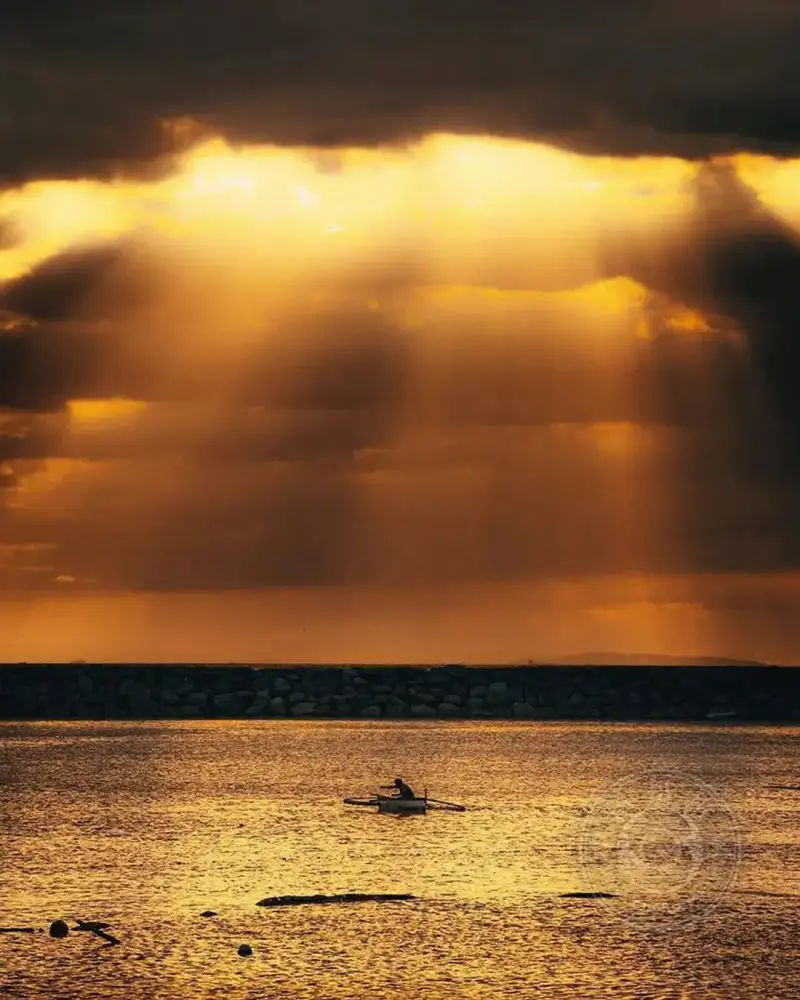

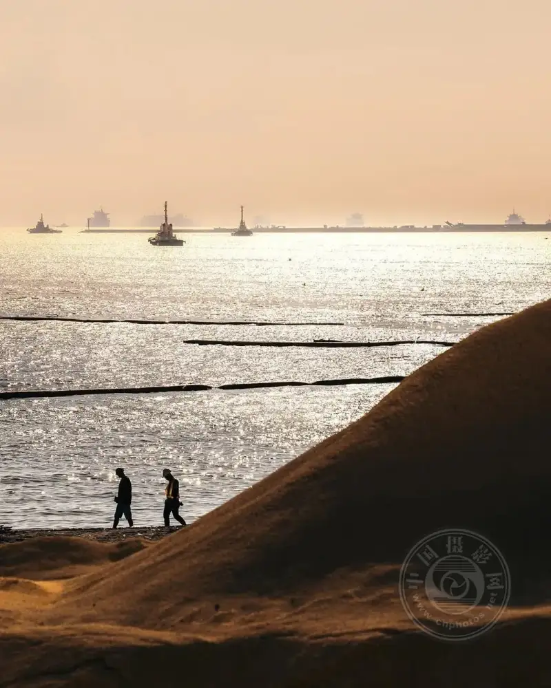
Tip 2: Strengthen the contrast between a person and a building
Contrast shows the true scale of a building or a place. A person is a great reference point.

Tip 3: Shoot from a low crouch
This is also called shooting from a low angle. Try to put the camera near the ground. The changed angle gives you a whole new way of seeing, and the result is fun.
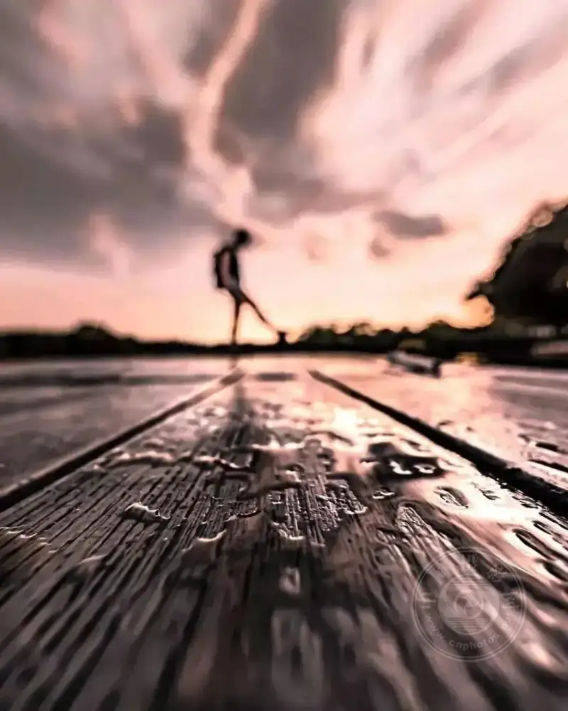
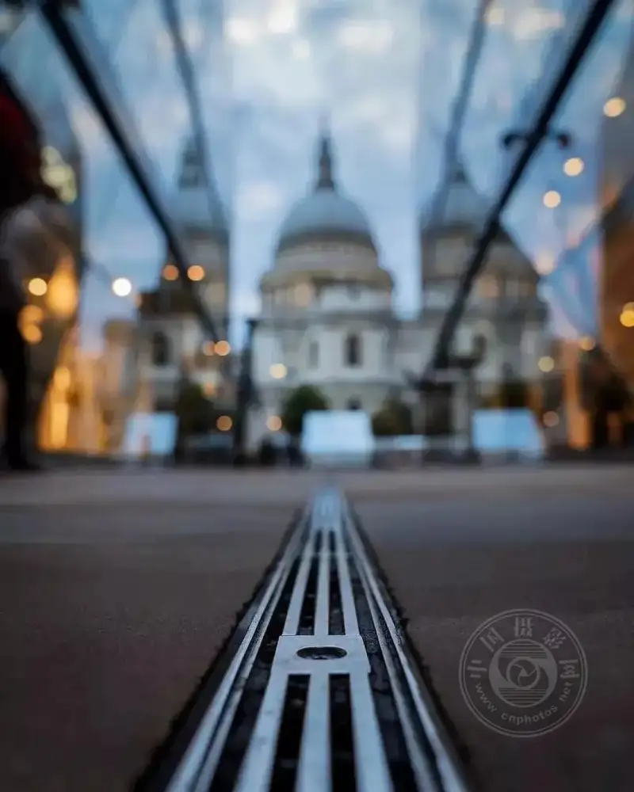
Tip 4: Use reflective surfaces to shoot symmetry
Symmetry always looks beautiful. A lake, a wet floor, and the glass windows of a building are all great reflective surfaces.
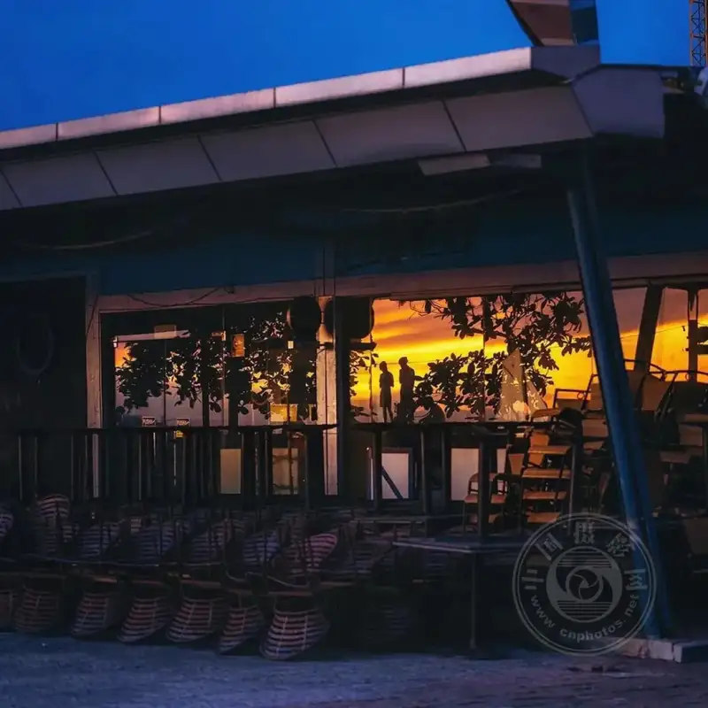

Tip 5: Try silhouettes
You are used to lighting every element in the frame. Once in a while, switch to a silhouette. It gives an unexpected result, and it adds a touch of mystery to the picture.


Tip 6: Set off the visual focus
You can use a silhouette or a frame to set off the point of the picture. You can also use editing software later to set off one visual focus.
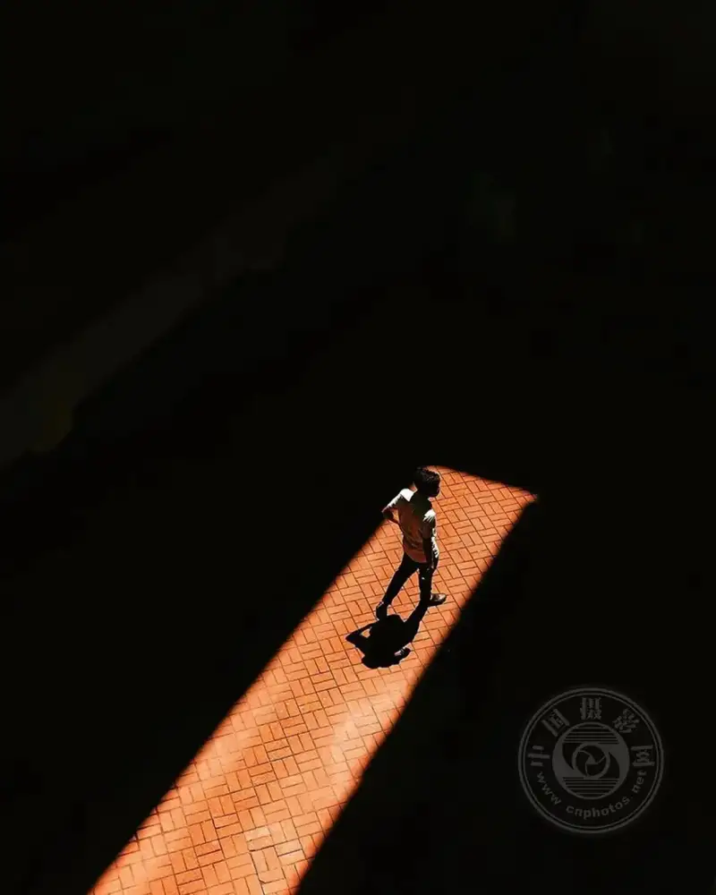
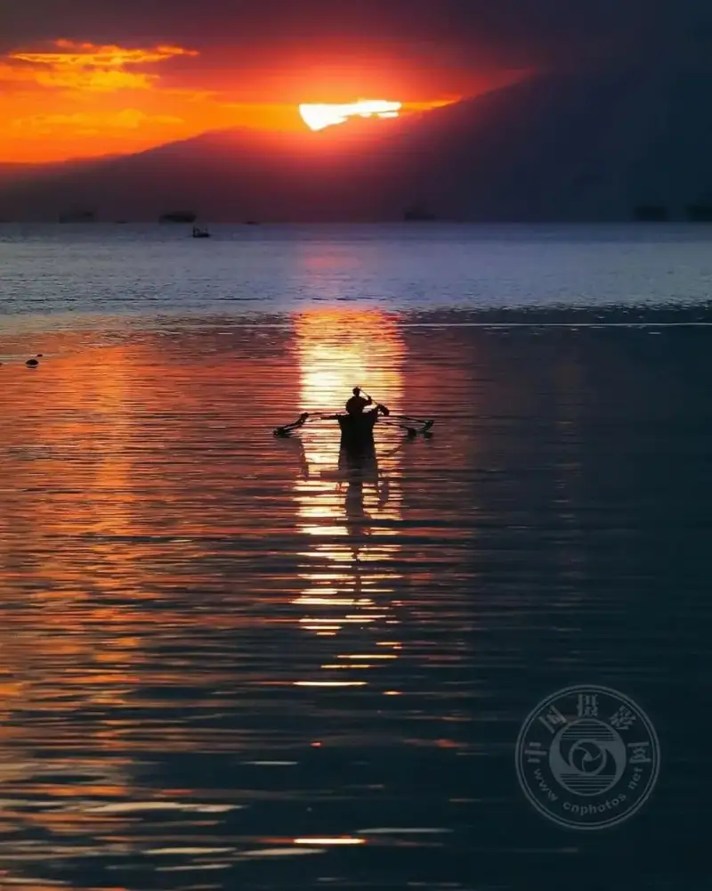

Tip 7: Do not give up because of bad weather
Do not cancel your street photo walk just because of wind and rain. Often, bad weather is exactly what makes a stunning photo.

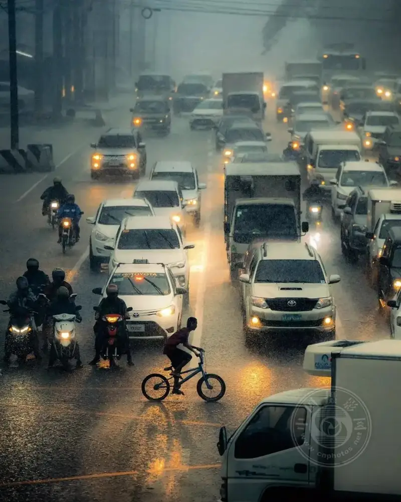
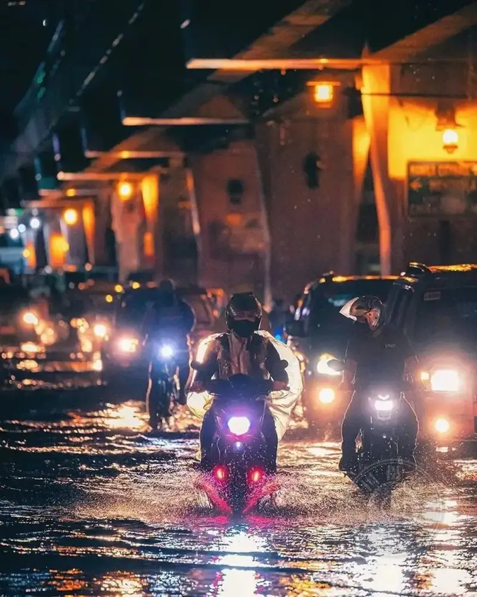
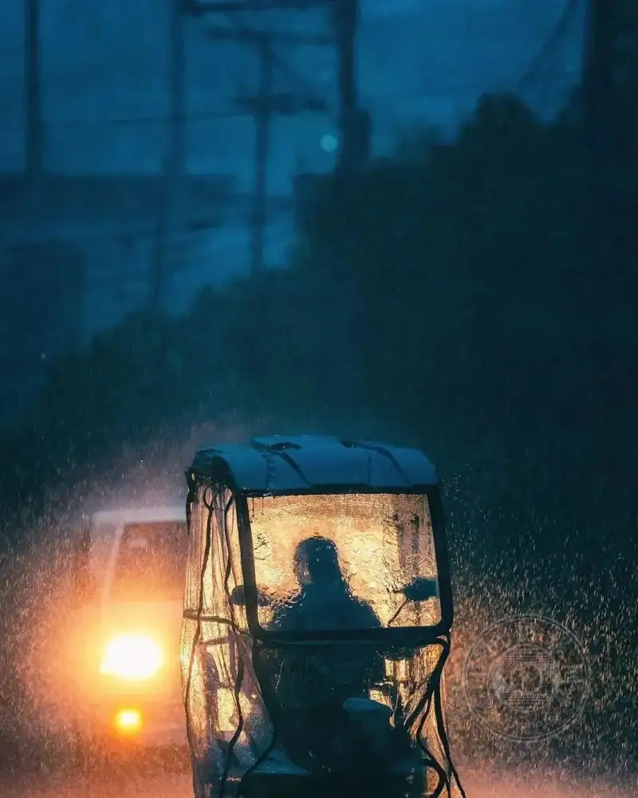

Tip 8: Catch the moment
The charm of photography is that it freezes a moment. Sometimes the magic arrives in a split second. Whether you catch it shows your level. The better you know your camera, the more you catch the instant before it slips away.

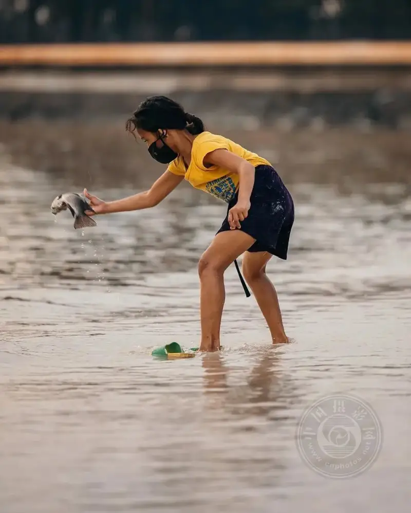
Tip 9: Strangers are good subjects too
On a travel shoot, beyond the views and the food, the people on the local streets are also great subjects. They often show the local way of life. But always ask first and smile. Your kindness will bring understanding, and a good photo.

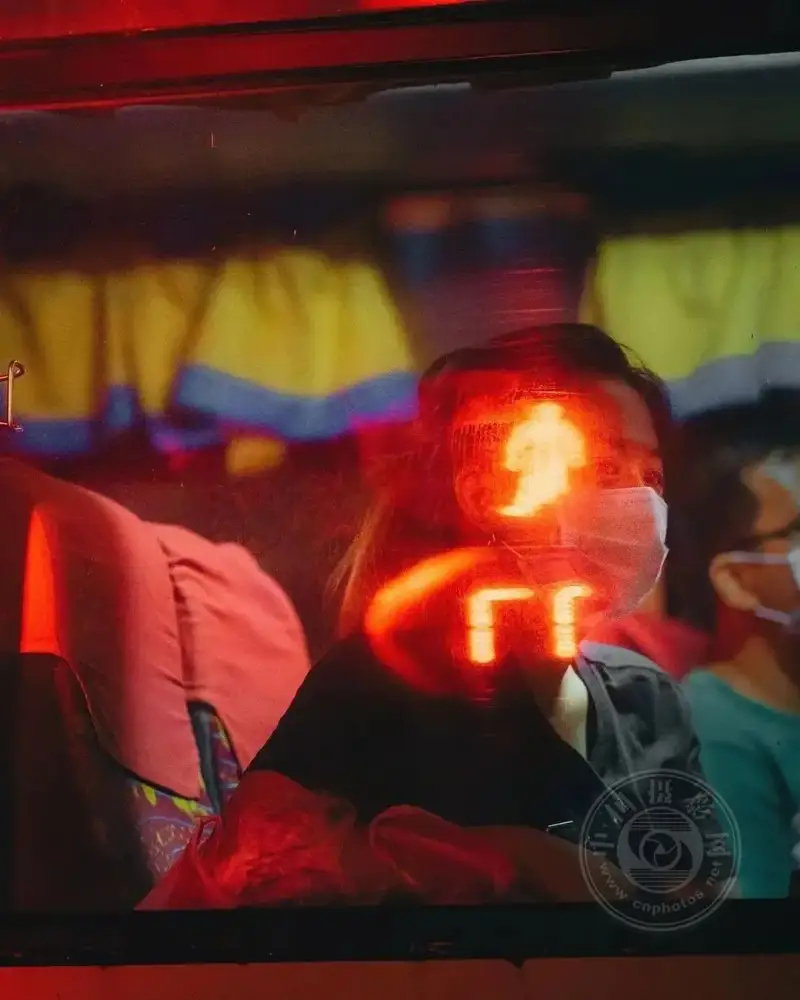

Tip 10: Shoot at dawn or dusk
Before sunrise in the morning, and around sunset in the afternoon, are the golden hours for photography.
At this time the sky often turns a beautiful orange-red or blue. The light ratio is not too harsh, so the exposure stays accurate. The light is soft, and backlight looks good no matter how you shoot.
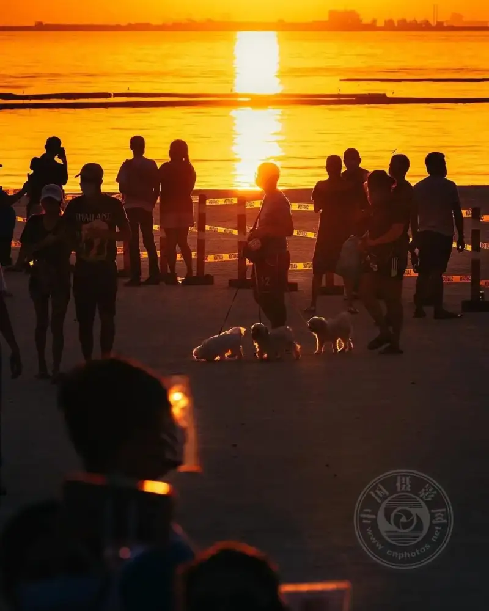

When you start photography, you may not know where to begin, or how to get better. Practice the 10 points above, and you will gain from them.